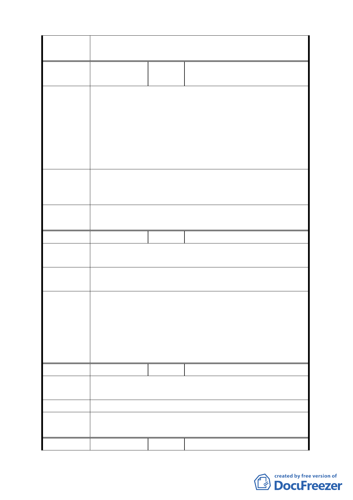

委員會議
決議
同編號 1。
編號
３
陳情人
何敦禮、何敦恥、何敦義、何啓
南
陳情位置：北投區行義段四小段 70 地號
溫泉產業專用區計畫內之目的之一係為現況業主合法化，為
何此計畫天仁溫泉餐廳未列入，全行義路共 24 家經營為何
陳情理由 獨漏掉天仁溫泉餐廳。敝餐廳已經營 20 幾年了，位置環境
使用、坪數多，比其他溫泉餐廳良好廣大。應合情合理公平，
而計畫既是政府德政，為何如此狹隘，請讓我們名正言順經
營。
一、敬請現場會勘
建議辦法 二、本計畫範圍過小，沒有將來性需擴大範圍以便利地方發
展。
委員會議 一、本計畫已辦理現場會勘。
決 議 二、同編號 1。
編號
４ 陳情人 林勝吉
陳情理由 陳情位置：北投區行義段一小段 66 地號
為產業發展希望能有住宿，要能蓋旅館，故樓層要加高。
建議辦法
希望將房屋高度由 10.5 公尺提高到 15 公尺，卽由 3 層提高
至 5 樓。
1.有關溫泉產業特定專用區內之土地及建築物，如符合市府
整體規劃方向，且不會造成對外交通衝擊，並經主管機關
委員會議 審核同意者，允許作旅館業使用。
決 議 2.本案以市府本次會議所送計畫書（市府業依規定區分為主
要及細部計畫書），依會議資料與書面補充資料，以及本次
會議決議第一點修正後通過。
編號
５ 陳情人 林森山
陳情理由 陳情位置：北投區行義段一小段 103、104 地號
讓地方更繁榮。
建議辦法 行義路西側放寬寬度。
委員會議
決議
同編號 1。
編號
６ 陳情人 陳傳宗
7